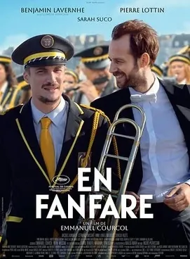

The genetics
DNA testing sets the story in motion: when Thibaut needs a bone marrow donor, the tests on his family reveal that he was adopted and lead him to a biological brother. The film then becomes a story about nature and nurture. Born to the same mother, the two brothers share an exceptional musical gift, but one was raised in a comfortable family and became a world-famous conductor, while the other grew up in a working-class town and plays in an amateur band; the shared gift points to heredity, while the gap between their lives reflects upbringing and class, the "injustices of destiny" Thibaut tries to repair, as the Spanish Wikipedia puts it. The medical thread stays in the background, and the treatment ultimately fails; the film's resolution is musical and emotional rather than medical.
The story
Thibaut Desormeaux, a celebrated orchestra conductor, collapses during a rehearsal and is diagnosed with acute leukaemia that requires a bone marrow transplant. Tests on his family show that he is not the biological child of his parents or the brother of his sister: he was adopted, and he has a younger biological brother, Jimmy Lecocq, also adopted, who works in a school canteen in a northern French town and plays trombone in the municipal marching band. The two have little in common except music. When the band loses its leader before a competition, Thibaut steps in and discovers that Jimmy has perfect pitch and exceptional talent, but a fight gets the band disqualified, Jimmy loses his job, and Thibaut wounds him by telling him he can never become a professional. The brothers reconcile even as Thibaut's treatment fails, and at his next concert Jimmy and the band surprise him by leading the audience in Ravel's Boléro.